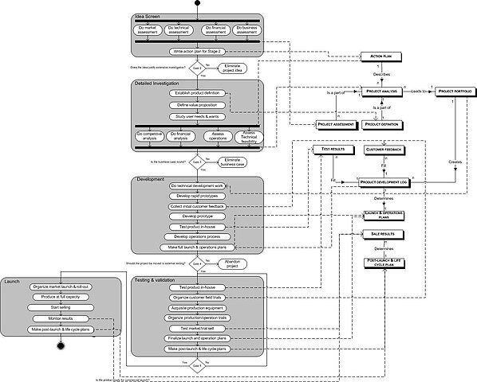
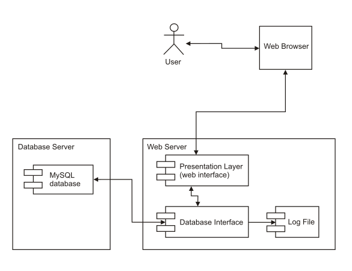
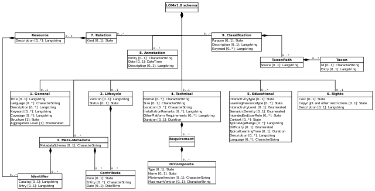

Les Diagrammes
Diagramme de séquence
Les diagrammes de séquences sont la représentation graphique des interactions entre les acteurs et le système selon un ordre chronologique dans la formulation Unified Modeling Language.
L'utilité du diagramme de séquence
Le diagramme de séquence permet de montrer les interactions d'objets dans le cadre d'un scénario d'un diagramme des cas d'utilisation.
Dans un souci de simplification, on représente l'acteur principal à gauche du diagramme, et les acteurs secondaires éventuels à droite du système.
Le but est de décrire comment se déroulent les interactions entre les acteurs ou objets.
La dimension verticale du diagramme représente le temps, permettant de visualiser l'enchaînement des actions dans le temps,
et de spécifier la naissance et la mort d'objets. Les périodes d'activité des objets sont symbolisées par des rectangles,
et ces objets dialoguent à l'aide de messages.

Diagramme de cas d'utilisation
Les diagrammes de cas d'utilisation (DCU) sont des diagrammes UML utilisés pour une représentation du comportement fonctionnel d'un système logiciel.
Ils sont utiles pour des présentations auprès de la direction ou des acteurs d'un projet, mais pour le développement, les cas d'utilisation sont plus appropriés.
En effet, un cas d'utilisation (use cases) représente une unité discrète d'interaction entre un utilisateur (humain ou machine)
et un système. Ainsi, dans un diagramme de cas d'utilisation, les utilisateurs sont appelés acteurs (actors), et ils apparaissent dans les cas d'utilisation.
Cas d'utilisation
Ils permettent de décrire l'interaction entre l'acteur et le système.
L'idée forte est de dire que l'utilisateur d'un système logiciel a un objectif quand il utilise le système !
Le cas d'utilisation est une description des interactions qui vont permettre à l'acteur d'atteindre son objectif en utilisant le système.
Les use case (cas d'utilisation) sont représentés par une ellipse sous-titrée par le nom du cas d'utilisation (éventuellement le nom est placé dans l'ellipse).
Un acteur et un cas d'utilisation sont mis en relation par une association représentée par une ligne.
Le plus souvent, le diagramme de cas d'utilisation est établi par la maîtrise d'ouvrage (MOA)
d'un projet lors de la rédaction du cahier des charges afin de transmettre les besoins des utilisateurs et les fonctionnalités
attendues associées à la maîtrise d'œuvre (MOE).
Diagramme d'activité
Le diagramme d'activité est un diagramme comportemental d'UML, permettant de représenter le déclenchement d'événements en fonction des états du système et de modéliser des comportements parallélisables (multi-threads ou multi-processus). Le diagramme d'activité est également utilisé pour décrire un flux de travail (workflow).
Description
Un diagramme d'activité permet de modéliser un processus interactif, global ou partiel pour un système donné (logiciel, système d'information). Il est recommandable pour exprimer une dimension temporelle sur une partie du modèle, à partir de diagrammes de classes ou de cas d'utilisation, par exemple.
Le diagramme d'activité est une représentation proche de l'organigramme ; la description d'un cas d'utilisation par un diagramme d'activité correspond à sa traduction algorithmique. Une activité est l'exécution d'une partie du cas d'utilisation, elle est représentée par un rectangle aux bords arrondis.
Le diagramme d'activité est sémantiquement proche des diagrammes de communication (appelés diagramme de collaboration en UML 1), ou d'état-transitions, ces derniers offrant une vision microscopique des objets du système.
Diagramme de déploiement
En UML, un diagramme de déploiement est une vue statique qui sert à représenter l'utilisation de l'infrastructure physique par le système et la manière dont les composants du système sont répartis ainsi que leurs relations entre eux.
Les éléments utilisés par un diagramme de déploiement sont principalement les nœuds, les composants, les associations et les artefacts. Les caractéristiques des ressources matérielles physiques et des supports de communication peuvent être précisées par stéréotype.
Diagramme de classe
Le diagramme de classes est un schéma utilisé en génie logiciel pour présenter les classes et les interfaces des systèmes ainsi que leurs relations. Ce diagramme fait partie de la partie statique d'UML, ne s'intéressant pas aux aspects temporels et dynamiques.
Une classe décrit les responsabilités, le comportement et le type d'un ensemble d'objets. Les éléments de cet ensemble sont les instances de la classe.
Une classe est un ensemble de fonctions et de données (attributs) qui sont liées ensemble par un champ sémantique. Les classes sont utilisées dans la programmation orientée objet. Elles permettent de modéliser un programme et ainsi de découper une tâche complexe en plusieurs petits travaux simples.
Les classes peuvent être reliées grâce au mécanisme d'héritage qui permet de mettre en évidence des relations de parenté. D'autres relations sont possibles entre des classes, représentées par un arc spécifique dans le diagramme de classes.
Elles sont finalement instanciées pour créer des objets (une classe est un moule à objet : elle décrit les caractéristiques des objets, les objets contiennent leurs valeurs propres pour chacune de ces caractéristiques lorsqu'ils sont instanciés).
